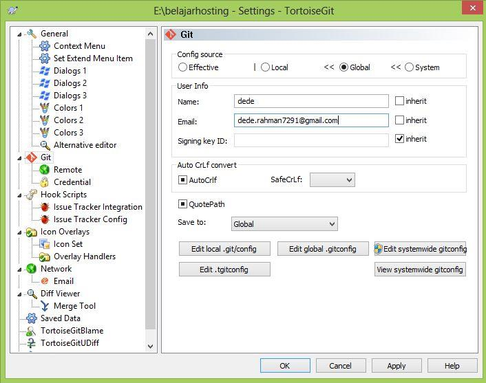

CARA HOSTING FILE DENGAN DOMAIN NAMA SENDIRI
A.Membuat webserver di openshift
1.Buat akun di openshift dan isikan username serta password kita

2.Verifikasi email yang dikirim dari openshift
3.Create First Application
4.Pilih aplikasi yang akan dibuat, contohnya Jekyll
5.Isi public URL dengan yang kita inginkan
misal : http://belajarhosting-dederahman.rhcloud.com
kemudian klik create application
6.Aplikasi sudah jadi
kita bisa cek dengan mengakses public url yang kita isi tadi "http://belajarhosting-dederahman.rhcloud.com
7.Download & Install puttygen, kemudian generate public key
8.Setelah muncul tampilan generate, isi key passphrase dengan yang mudah diingat, misal "123"
9.klik save private key dan simpan di folder yang mudah diakses kembali
10.Copy text yang ada di textbox public key ke ssh public key di akun openshift kita
klik "add ssh public key" di akun openshift
11.beri nama pada key nya misalnya ssh-key dan paste text yang tadi dicopy pada textbox di bawahnya

12.klik create untuk membuat ssh key

13.setelah sukses membuat ssh key, kemudian download dan instal tortoise untuk mengclone source kode ke komputer kita
14.ikuti langkahnya sampai selesai
15.Setelah tortoise terinstal, buka windows explorer dan masuk ke folder dimana kita akan mengclone source kode dari openshift, lalu klik kanan dan pilih git clone
16.Pada tampilan git clone masukkan URL dari source kode openshift dan untuk Load putty key kita browse ke file private key yang tadi kita simpan
17.masukkan passphrase yang tadi kita isi yaitu "123"
18.Setelah di klik OK , maka akan muncul folder belajarhosting
B.Buat aplikasi / artikel
1.Setelah folder belajarhosting muncul kita buat artikel untuk web berbasis html
Misal kita buat file index.html

2.Copy file .html tersebut beserta file-file extensi lainnya seperti css & javascript serta file gambar ke folder belajarhosting dan replace file index yang ada di folder tersebut
3.Setelah itu kita deploy kembali file tersebut ke openshift
4.Pada menu tortoiseGit masukkan nama dan email yang kita gunakan
5.Pada textbox commit masukkan pesan ( apapun boleh ) misal commit 1
6.Setelah sukses di commit lalu kita push ke openshift
7.Push ke master branch

8.Push sukses, lakukan cara seperti di atas pada file css, javascript dan file-file lainnya yang akan di upload ke openshift
9.Setelah push sukses, kita coba akses kembali aplikasi yang kita buat tadi
masuk ke akun openshift kita dan klik di aplikasi kita
atau kita bisa langsung masukkan URL kita di browser http://belajarhosting-dederahman.rhcloud.com
Membuat Artikel berhasil.........
C.Daftar Domain
1.Kunjungi salah satu situs penyedia domain, misal https://idwebhost.com dan cek ketersediaan domain yang kita inginkan. Contoh "dedeabdurahman.com"
2.Apabila tersedia, beli domain yang kita inginkan dan ikuti langkah-langkahnya
3.Setelah selesai melakukan konfirmasi pembayaran, Login ke area klien dengan akun yang tadi di buat
4.Untuk mengarahkan domain kita ke openshift kita harus mengelola dns di domain kita
Caranya masuk ke menu domain dan manage nameserver
5.pilih menu alat pengelolaan dan pilih kelola dns
6.tambah kolom record dengan jenis CName dan masukkan url kita di openshift "http://belajarhosting-dederahman.rhcloud.com" dan simpan perubahan
7.Konfigurasi virtual host
Pada menu new alias kiat masukkan domain name kita "www.dedeabdurahman.com"
8.tunggu beberapa lama dan coba akses alamat domain kita di browser yaitu "dedeabdurahman.com"